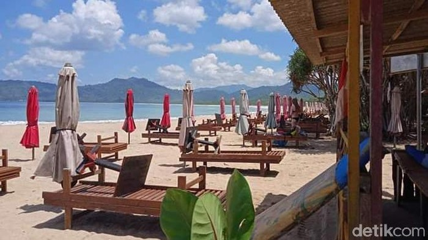

Berita Banyuwangi
more
Kawah Ijen Dibuka Hari Ini, Baca Dulu Syarat Masuknya
Taman Wisata Alam Kawah Ijen sempat ditutup untuk wisatawan. Destinasi wisata di Banyuwangi tu dibuka lagi mulai hari ini
read more 
Sambut Nataru, Pokdarwis Banyuwangi Mitigasi Risiko Keselamatan Wisatawan
Instrumen keselamatan bagi wisatawan menjadi poin penting yang patut diperhatikan
read more
Taman Gandrung Terakota, 'Desa' 1.000 Patung Penari di Banyuwangi
Banyuwangi memiliki destinasi wisata menarik, seperti Taman Gandrung Terakota. Di sini, ada 1.000
read more